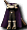
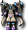

燕尾服｜變裝｜泳裝｜鏡之城｜迪姆萊特系｜雷歐加爾特｜斯科爾菲吉｜其他
名稱為橘色的是可以附魔的物品。另外，未鑑定名稱是該道具在未鑑定狀態下的名稱。
提供情報或編輯請求，請到情報提供公佈欄、編輯公佈欄。
燕尾服
| 名稱 | 價格 | 限制 | 職業 | Wei | 取得方式 |
 燕尾服 燕尾服 | 2,000,000 | Lv51,FLv21 | 戰修盜騎阿聖魔預吟 | 2 | 伊卡洛斯：婚禮會場 |
| 能力 | 結婚時必須穿著 |
| 備註 | 婚禮服 |
| 名稱 | 價格 | 限制 | 職業 | Wei | 取得方式 |
| 黑色燕尾服 | 2,000,000 | Lv51,FLv21 | 戰修盜騎阿聖魔預吟 | 2 | 伊卡洛斯：婚禮會場 |
| 能力 | 婚禮服 |
| 名稱 | 價格 | 限制 | 職業 | Wei | 取得方式 |
| 指揮官專用燕尾服 | 6,000,000 | Lv51,FLv21 | 戰修盜騎阿聖魔預吟 | 2 | 伊卡洛斯：婚禮會場 |
| 能力 | 婚禮服 AAR+40、SAR+40 |
變裝
| 名稱 | 價格 | 限制 | 職業 | Wei | 取得方式 |
| 英雄皮革？ | 100,000 | Lv31,FLv10 | 戰修盜騎阿聖魔預吟 | 5 | 魯克西翁：鐵匠[e] |
| 能力 | 可以體驗戰士心情的衣服 |
| 名稱 | 價格 | 限制 | 職業 | Wei | 取得方式 |
 拳法裝？ 拳法裝？ | 100,000 | Lv31,FLv10 | 戰修盜騎阿聖魔預吟 | 5 | 魯克西翁：鐵匠[e] |
| 能力 | 可以體驗修道士心情的衣服 |
| 名稱 | 價格 | 限制 | 職業 | Wei | 取得方式 |
 偵察服？ 偵察服？ | 100,000 | Lv31,FLv10 | 戰修盜騎阿聖魔預吟 | 5 | 魯克西翁：鐵匠[e] |
| 能力 | 可以體驗盜賊心情的衣服 |
| 名稱 | 價格 | 限制 | 職業 | Wei | 取得方式 |
 修士服？ 修士服？ | 100,000 | Lv31,FLv10 | 戰修盜騎阿聖魔預吟 | 5 | 魯克西翁：鐵匠[e] |
| 能力 | 可以體驗聖職者心情的衣服 |
| 名稱 | 價格 | 限制 | 職業 | Wei | 取得方式 |
 魔導士之袍？ 魔導士之袍？ | 100,000 | Lv31,FLv10 | 戰修盜騎阿聖魔預吟 | 5 | 魯克西翁：鐵匠[e] |
| 能力 | 可以體驗魔術師心情的衣服 |
| 名稱 | 價格 | 限制 | 職業 | Wei | 取得方式 |
 聖潔騎士甲？ 聖潔騎士甲？ | 100,000 | Lv31,FLv10 | 戰修盜騎阿聖魔預吟 | 5 | 藍寶石波恩騎士潘朵拉之箱[e] |
| 能力 | 可以體驗騎士心情的衣服 |
| 名稱 | 價格 | 限制 | 職業 | Wei | 取得方式 |
 傳說之服？ 傳說之服？ | 100,000 | Lv31,FLv10 | 戰修盜騎阿聖魔預吟 | 5 | 藍寶石波恩騎士潘朵拉之箱[e] |
| 能力 | 可以體驗吟遊詩人心情的衣服 |
泳裝
| 名稱 | 價格 | 限制 | 職業 | Wei | 取得方式 |
| 東方賽茵斯 | 1,000 | Lv1,FLv5 | 戰修盜騎阿聖魔預吟 | 0 | 伊卡洛斯：雜貨店海灘夾板:安迪爾斯獨眼怪[e] |
| 能力 | AC-1、MC-1 |
| 備註 | 泳裝、夏威夷襯衫(黃) 海灘夾板 |
| 名稱 | 價格 | 限制 | 職業 | Wei | 取得方式 |
| 橄欖賽茵斯 | 1,000 | Lv1,FLv5 | 戰修盜騎阿聖魔預吟 | 0 | 伊卡洛斯：雜貨店公會城地下城1:達斯特[e] |
| 能力 | AC-2、MC-2 |
| 備註 | 泳裝、夏威夷襯衫(綠) 海灘夾板 |
| 名稱 | 價格 | 限制 | 職業 | Wei | 取得方式 |
| 藍色賽茵斯 | 1,000 | Lv1,FLv5 | 戰修盜騎阿聖魔預吟 | 0 | 魔窟13：波特系的其中之一[e] |
| 能力 | AC-3、MC-3 |
| 備註 | 海灘斯普林特 |
| 名稱 | 價格 | 限制 | 職業 | Wei | 取得方式 |
| 萊姆橙賽茵斯 | 1,000 | Lv1,FLv5 | 戰修盜騎阿聖魔預吟 | 0 | 裝備彩券[e] |
| 能力 | AC-4、MC-4 |
| 備註 | 泳裝、夏威夷襯衫(橘) 海灘夾板 |
| 名稱 | 價格 | 限制 | 職業 | Wei | 取得方式 |
| 粉紅賽茵斯 | 1,000 | Lv1,FLv5 | 戰修盜騎阿聖魔預吟 | 0 | 紅卡片人(強)[e] |
| 能力 | AC-5、MC-5 |
| 備註 | 泳裝、夏威夷襯衫(粉紅) 海灘夾板 |
| 名稱 | 價格 | 限制 | 職業 | Wei | 取得方式 |
| 馬丁賽茵斯 | 1,000 | Lv1,FLv5 | 戰修盜騎阿聖魔預吟 | 0 | 公會城地下城1[e] |
| 能力 | AC-6、MC-6 |
| 備註 | 泳裝、夏威夷襯衫(群青) 海灘夾板 |
| 名稱 | 價格 | 限制 | 職業 | Wei | 取得方式 |
| 琥珀賽茵斯 | 1,000 | Lv1,FLv5 | 戰修盜騎阿聖魔預吟 | 0 | [e] |
| 能力 | AC-7、MC-7 |
| 備註 | 海灘斯普林特 |
| 名稱 | 價格 | 限制 | 職業 | Wei | 取得方式 |
| 火紅賽茵斯 | 1,000 | Lv1,FLv5 | 戰修盜騎阿聖魔預吟 | 0 | [e] |
| 能力 | AC-8、MC-8 |
| 備註 | 泳裝、夏威夷襯衫(紅) 海灘夾板 |
| 名稱 | 價格 | 限制 | 職業 | Wei | 取得方式 |
| 血色賽茵斯 | 1,000 | Lv1,FLv5 | 戰修盜騎阿聖魔預吟 | 0 | 公會城地下城2[e] |
| 能力 | AC-9、MC-9 |
| 備註 | 海灘斯普林特 |
| 名稱 | 價格 | 限制 | 職業 | Wei | 取得方式 |
| 嬰兒粉紅聖者 | 1,000 | Lv1,FLv5 | 戰修盜騎阿聖魔預吟 | 0 | [e] |
| 能力 | AC-10、MC-10 |
| 備註 | 泳裝、夏威夷襯衫(深粉紅) 海灘夾板 |
| 名稱 | 價格 | 限制 | 職業 | Wei | 取得方式 |
| 嬰兒天空聖者 | 1,000 | Lv1,FLv5 | 戰修盜騎阿聖魔預吟 | 0 | [e] |
| 能力 | AC-11、MC-11 |
| 備註 | 泳裝、夏威夷襯衫(水藍) 海灘夾板 |
| 名稱 | 價格 | 限制 | 職業 | Wei | 取得方式 |
| 黑色賽茵斯 | 1,000 | Lv1,FLv5 | 戰修盜騎阿聖魔預吟 | 0 | 公會城地下城3[e] |
| 能力 | AC-12、MC-12 |
| 備註 | 泳裝、夏威夷襯衫(黑) 海灘夾板 |
| 名稱 | 價格 | 限制 | 職業 | Wei | 取得方式 |
| 銀色賽茵斯 | 1,000 | Lv1,FLv5 | 戰修盜騎阿聖魔預吟 | 0 | [e] |
| 能力 | AC-13、MC-13 |
| 備註 | 海灘斯普林特 |
其他
| 名稱 | 價格 | 限制 | 職業 | Wei | 取得方式 |
| 男用聖誕老人服 | 10,000 | Lv31 | 戰修盜騎阿聖魔預吟 | 10 | Q;聖誕老人服結束後可購買[e] |
| 能力 | AC-10、MC-10 |
| 備註 | 聖誕老人男子訓練生穿的聖誕訓練服。武器、防具會被強制解除裝備 |
| 名稱 | 價格 | 限制 | 職業 | Wei | 取得方式 |
 夜之卡布里服 | - | Lv51 | 戰修盜騎阿聖魔預吟 | 15 | 裝備彩券[e] |
| 能力 | AC-20、MC-20 |
| 備註 | 外型像夜間哥布林，據說可以欺騙對手，也可能不行……。 |
| 名稱 | 價格 | 限制 | 職業 | Wei | 取得方式 |
 祈禱師之衣 祈禱師之衣 | - | Lv51 | 戰修盜騎阿聖魔預吟 | 9 | 怨靈術士:滿月的櫻花村[e] |
| 能力 | AC-24、MC-26、SAR+1%、HP+30 +OP附魔 |
| 備註 | 麻痺防禦。驅除惡鬼的祈禱師之衣。有2週期限。 |
| 名稱 | 價格 | 限制 | 職業 | Wei | 取得方式 |
 忍者之衣 忍者之衣 | 0 | Lv51 | 戰修盜騎阿聖魔預吟 | 16 | (忘卻的)怨靈術士:滿月的櫻花村[e] |
| 能力 | AC-31、MC-19、AAR+1%、HP+30 +OP附魔 |
| 備註 | 麻痺防禦。如烈火燃燒般的紅色衣服。有2週期限。 |
| 名稱 | 價格 | 限制 | 職業 | Wei | 取得方式 |
| 復仇者長袍 | Lv71,FLv15 | 戰修盜騎阿聖魔預吟 | 6 | 艾爾汀[e] | |
| 能力 | AC-26、MC-25、AAR8%、SAR8%、HP50、SP50 |
| 備註 | 與聖誕老人服相同，穿上後武器會被強制卸下。另外，穿著時無法使用技能、魔法。是細部都重現偉大魔術師所穿服裝的衣服。藉由魔法的效果提升迴避率。 |
| 名稱 | 價格 | 限制 | 職業 | Wei | 取得方式 |
 賽帕鎧甲 | 200,000 | Lv91,FLv21 | 戰修盜騎阿聖魔預吟 | 10 | 諾克斯要塞任務獎勵[e] |
| 能力 | AC-38、MC-25、AAR10%、SAR10%、HP50、SP50 |
| 備註 | 梅德尼亞大陸的怪物所穿的被詛咒的西裝。蘊含強大的瑪那之力。 |
| 名稱 | 價格 | 限制 | 職業 | Wei | 取得方式 |
| 賽帕長衫 | 200,000 | Lv91,FLv21 | 戰修盜騎阿聖魔預吟 | 7 | 諾克斯要塞任務獎勵[e] |
| 能力 | AC-25、MC-38、AAR+10、SAR+10、HP+30、MP+70 |
| 備註 | 梅德尼亞大陸的怪物所穿的被詛咒的西裝。蘊含強大的瑪那之力。 |
| 名稱 | 價格 | 限制 | 職業 | Wei | 取得方式 |
| 腐朽的賽帕長衫 | 200,000 | Lv91,FLv21 | 戰修盜騎阿聖魔預吟 | 7 | [e] |
| 能力 | AC-25、MC-38、AAR+10、SAR+10、HP+30、MP+70 |
| 備註 | 梅德尼亞大陸的怪物所穿的受詛咒西裝。蘊含強大的魔力。因為暴露在海水中，感覺隨時都會腐朽。 |
鏡之城
鎧甲
| 名稱 | 價格 | 限制 | 職業 | Wei | 取得方式 |
| [男](遺忘)格里馬林鎧甲 | Lv93,FLv41 | 戰修盜騎阿聖魔預吟 | 23 | 失去記憶的冒險者[e] | |
| 能力 | AC-41、MC-28、HP70 |
| 備註 | 完成使命、即將消失的鎧甲。3天內，或死亡時消失。有專屬 |
| 名稱 | 價格 | 限制 | 職業 | Wei | 取得方式 |
| [男]格里馬林鎧甲 | 596,000 | Lv93,FLv41 | 戰修盜騎阿聖魔預吟 | 25 | 失去記憶的冒險者(鏡之空間5)[e] |
| 能力 | AC-39、MC-26、HP70 |
| 備註 | 完成使命、快要消失的鎧甲。過30天就會消失。升級的話可以延長鎧甲的壽命。不可染色 |
| 名稱 | 價格 | 限制 | 職業 | Wei | 取得方式 |
| [男]斯帕克林鎧甲 | Lv103,FLv51 | 戰修盜騎阿聖魔預吟 | 25 | [e] | |
| 能力 | AC-45、MC-32、HP90 |
| 備註 | 格里馬林鎧甲的升級型態。可以進一步升級，覺醒道具的能力。 |
| 名稱 | 價格 | 限制 | 職業 | Wei | 取得方式 |
| [男]格雷爾鎧甲 | Lv113,FLv- | 戰修盜騎阿聖魔預吟 | - | [e] | |
| 能力 | AC-51、MC-36、AAR+3%、SAR+2%、HP+140 |
| 備註 | - |
長袍
| 名稱 | 價格 | 限制 | 職業 | Wei | 取得方式 |
| [男](遺忘)格里馬林長袍 | Lv93,FLv31 | 戰修盜騎阿聖魔預吟 | - | [e] | |
| 能力 | AC-33、MC-37、HP30、MP30 |
| 備註 | 完成使命、即將消失的長袍。3天內，或死亡時消失。有專屬 |
| 名稱 | 價格 | 限制 | 職業 | Wei | 取得方式 |
| [男]格里馬林長袍 | Lv93,FLv41 | 戰修盜騎阿聖魔預吟 | 17 | [e] | |
| 能力 | AC-31、MC-35、HP+30、MP+30 |
| 備註 | 附30天期限 不可染色 |
| 名稱 | 價格 | 限制 | 職業 | Wei | 取得方式 |
| [男]斯帕克林長袍 | Lv103,FL51 | 戰修盜騎阿聖魔預吟 | 17 | [e] | |
| 能力 | AC-39、MC-41、HP+60、MP+60 |
| 備註 | 格里馬林長袍的升級型態。可以進一步升級，覺醒道具的能力。不可染色，無專屬(可轉讓) |
| 名稱 | 價格 | 限制 | 職業 | Wei | 取得方式 |
| [男]格雷爾長袍 | 894,000 | Lv113,FL61 | 戰修盜騎阿聖魔預吟 | 18 | [e] |
| 能力 | AC-41、MC-51、AAR+2%、SAR+3%、HP+80、MP+80 |
| 備註 | 借用魔力之鏡碎片的力量製成的長袍。 |
迪姆萊特系
布衣
| 名稱 | 價格 | 限制 | 職業 | Wei | 取得方式 |
 忘卻的幽光布衣 忘卻的幽光布衣 | - | Lv100,FLv71VLv41,BLv41 | 戰修盜騎阿聖魔預吟 | 23 | 暗影幻影[e] |
| 能力 | AC-43、MC-36、AAR4%、HP+100、MP+80 |
| 備註 | 有耐久度。以微微發亮的魔石加工製成的男性用服裝。死亡後消失 |
| 名稱 | 價格 | 限制 | 職業 | Wei | 取得方式 |
| 幽光布衣 | 72,000 | Lv100,FLv71VLv41,BLv41 | 戰修盜騎阿聖魔預吟 | 23 | [e] |
| 能力 | AC-43、MC-36、AAR4%、HP100、SP80 |
| 備註 | 以微微發亮的魔石加工製成的男性用服裝，藉由魔石的力量強化，可以升級為魯尼克套裝道具。不可染色 有專屬 耐久度100% |
| 名稱 | 價格 | 限制 | 職業 | Wei | 取得方式 |
| 魯尼克布衣 | 90,000 | Lv105,FLv81VLv51,BLv51 | 戰修盜騎阿聖魔預吟 | 25 | [e] |
| 能力 | AC-46、MC-36、AAR5%、HP130、SP100 |
| 備註 | 藉由魔石的力量增加光輝的男性用服裝，專為擅長近戰攻擊的職業加工。不可染色 有耐久度 有專屬 |
| 名稱 | 價格 | 限制 | 職業 | Wei | 取得方式 |
| 迪卡魯尼克布衣 | - | Lv110,FLv91VLv61,BLv61 | 戰修盜騎阿聖魔預吟 | 28 | [e] |
| 能力 | AC-49 MC-37 AAR6% HP150 SP120 |
長袍
| 名稱 | 價格 | 限制 | 職業 | Wei | 取得方式 |
 忘卻的幽光長袍 忘卻的幽光長袍 | 12,000 | Lv100,FLv71VLv41,BLv41 | 戰修盜騎阿聖魔預吟 | 17 | 迪諾洛克[e] |
| 能力 | AC-36、MC-43、SAR4%、HP+100、MP+80 |
| 備註 | 有耐久度。以微微發亮的魔石加工製成的男性用服裝。死亡後消失 |
| 名稱 | 價格 | 限制 | 職業 | Wei | 取得方式 |
| 幽光長袍 | 72,000 | Lv100,FLv71VLv41,BLv41 | 戰修盜騎阿聖魔預吟 | 17 | [e] |
| 能力 | AC-36、MC-43、SAR4%、HP+100、MP+80 |
| 備註 | 以微微發亮的魔石加工製成的男性用服裝，藉由魔石的力量強化，可以升級為魯尼克套裝道具。不可染色 |
| 名稱 | 價格 | 限制 | 職業 | Wei | 取得方式 |
| 魯尼克長袍 | - | Lv105,FLv81VLv51,BLv51 | 戰修盜騎阿聖魔預吟 | 22 | [e] |
| 能力 | AC-38 MC-44 SAR5% HP130 MP100 |
| 名稱 | 價格 | 限制 | 職業 | Wei | 取得方式 |
| 迪卡魯尼克長袍 | - | Lv110,FLv91VLv61,BLv61 | 戰修盜騎阿聖魔預吟 | 22 | [e] |
| 能力 | AC-40 MC-47 SAR6% HP150 MP120 |
雷歐加爾特的靈魂
鎧甲
| 名稱 | 價格 | 限制 | 職業 | Wei | 取得方式 |
 忘卻的雷歐加爾特布衣（男） 忘卻的雷歐加爾特布衣（男） | 57,200 | Lv105,FLv71VLv21,BLv21 | 戰修盜騎阿聖魔預吟 | 26 | |